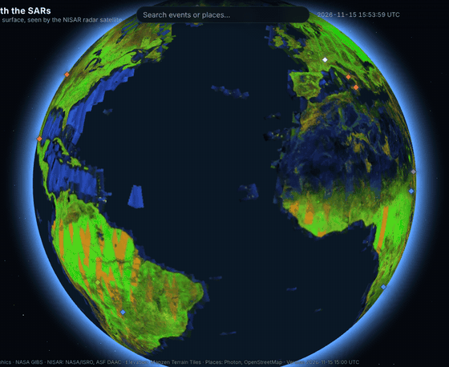
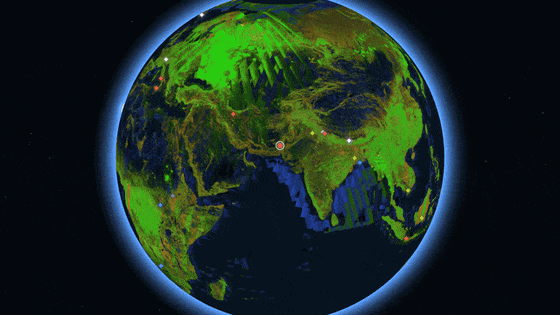
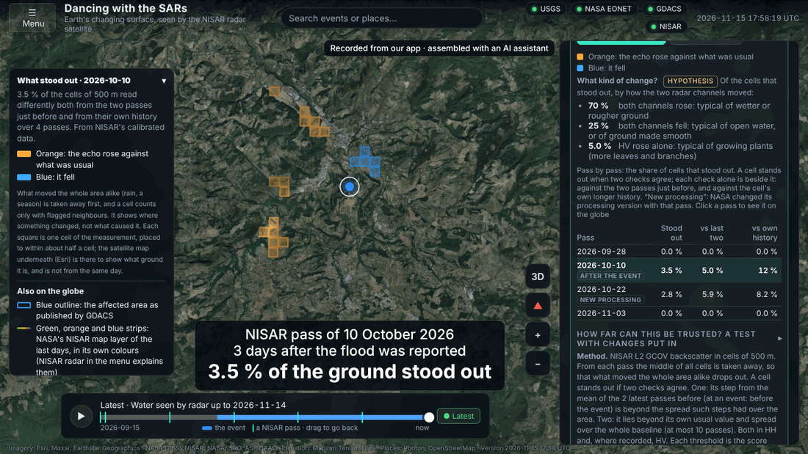
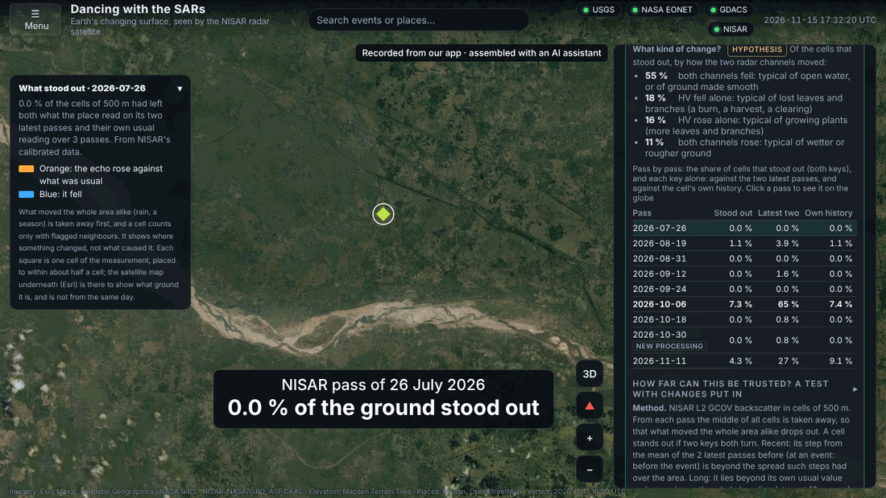
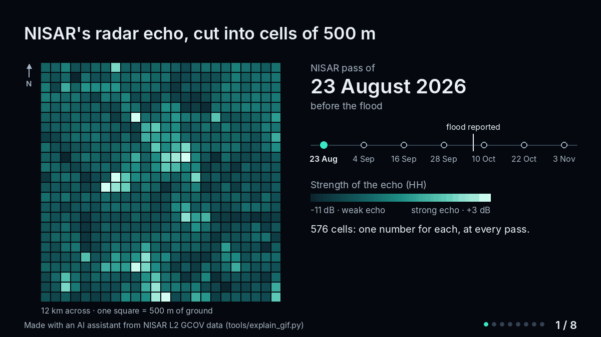
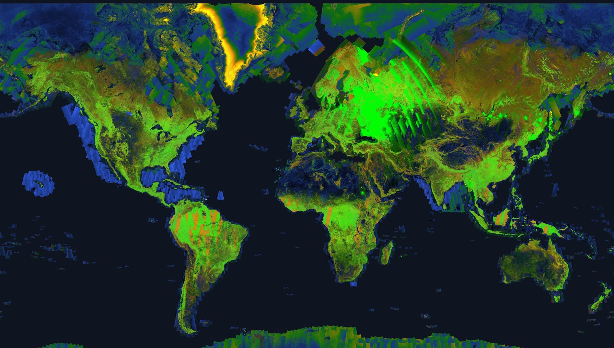

NASA Space Apps Challenge 2026 · Challenge: Dancing with the SARs
Cloud
Piercer
A live globe that shows what a place normally reads on NISAR's radar, and where the ground did something else.
Team: We came, We saw, We scattered
- Lucas Cicek: Full-stack AI Engineer
- Trisrota Bose: Computer Science Masters student
- Madhura Saha: Earth Observation Masters student
The challenge, and our answer
“Track and visualize surface change at locations around the world” with NISAR
| The challenge asks for | In our app |
|---|---|
| An interactive NISAR app | A 3D globe of NISAR's radar, with live events |
| “Change-detection maps” | The 500 m cells that stood out, on the map |
| “Time-series animations” | Every pass of a place, played in order |
| “Which polarizations?” “Physical drivers?” | HH and HV side by side; a likely cause, marked as a hypothesis |
| “Other frequencies”, “ancillary data” | Sentinel-1's C-band beside L-band; 15 context layers |
| “Actionable insights” | How much ground changed, where, against what is normal |

For whom: disaster and aid teams deciding where to send help; farm advisers; teachers and the public.
What we built · how someone uses it
Three steps from a reported event to what the radar measured
- Open the globe. Live earthquakes, floods, fires and storms on NISAR's picture of the planet.
- Pick an event. NISAR's passes before and after it, on a timeline.
- Read what stood out. How much ground changed, where, and what kind of change.

Interactive change detection · a flood in Italy, October 2026
Before the flood nothing stood out. Three days after it, 3.5 % of the ground did
| NISAR pass | Stood out | |
|---|---|---|
| 28 September | 0.0 % | before |
| 10 October | 3.5 % | 3 days after |
| 22 October | 2.8 % | |
| 3 November | 0.0 % | as before |
What kind of change? In 70 % of those cells both radar channels rose, typical of wetter ground; in 25 % both fell, typical of open water. The app says this as a hypothesis: the map shows where, not why.

Time series · farming · rice fields of Bardhaman, West Bengal
One rice season in two polarisations: flooded in July, tall in October, harvested in November
- HH, −10.9 dB in July: the paddies are under water, and smooth water sends little back.
- HH, −3.7 dB in October: the rice stands tall; the echo is five times as strong.
- HV rises with the crop and stays up: the channel that leaves and stems send back.
- November, the harvest: HH falls again.
12 passes, 1,024 cells of 500 m. A crop is a change too: with one season of data the detector cannot yet tell the two apart, and we say so.

Validity · how the detector works, measured
Two checks must agree before a cell counts, and we measured how often that is right

The test: changes of known size put into real passes. “Right”: the share of flagged cells that lay in the change.
| Change put in (2.5 km) | Found | Right |
|---|---|---|
| −6 dB, quiet ground | 98 % | 96 % |
| −3 dB, quiet ground | 79 % | 96 % |
| −3 dB, changing ground | 33 % | 27 % |
| Nothing put in, quiet | flagged: | 0.06 % |
Limits. One season of data: where a crop grows or a reservoir fills, it cannot yet tell that from an event. Of 18 reported events measured, 4 lie in open water (not judged), the flood stood out, one earthquake site shows 16 % for a cause unknown, the rest under 1 %.
Built on open data · what we added · what comes next
What NASA and its partners give, and what we added
| Open data and tools we start from | What we added |
|---|---|
| NISAR's map layer (NASA GIBS), one day at a time | The whole planet from 48 days on a 3D globe; damaged tiles found and replaced |
| NISAR L2 GCOV: calibrated data in large files behind a login | A public job measures them twice a day; every value is in the repository |
| NASA OPERA DIST-ALERT: disturbed ground from Sentinel-1 | The same idea for NISAR, with its accuracy measured |
| USGS, NASA EONET, GDACS: event reports | One globe where a report, the radar and the measurement meet |
Next: a full year of NISAR, so seasons are known · every reported event measured · soil moisture and ground movement.
